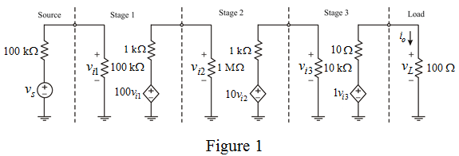

Step 1:
Refer to Figure 1.17 in the textbook.
Apply voltage division rule and determine the value of  .
.
Apply voltage division rule and determine the value of  .
.
Apply voltage division rule and determine the value of .
Apply voltage division rule and determine the value of  .
.
Step 2:
Determine the voltage gain of the amplifier.
…… (1)
Therefore, the voltage gain is .
Step 3:
From figure 1.17 in the textbook, interchange first and second stage.
Draw the modified circuit diagram.

Step 4:
Apply voltage division rule and determine the value of .
Apply voltage division rule and determine the value of  .
.
Apply voltage division rule and determine the value of .
Apply voltage division rule and determine the value of  .
.
Step 5:
Determine the voltage gain of the amplifier.
…… (2)
Therefore, the voltage gain is  .
.
Compare equation (1) and equation (2).
The overall gain is decreased, when the first and the second stage are interchanged.
Therefore, the gain is decreased.